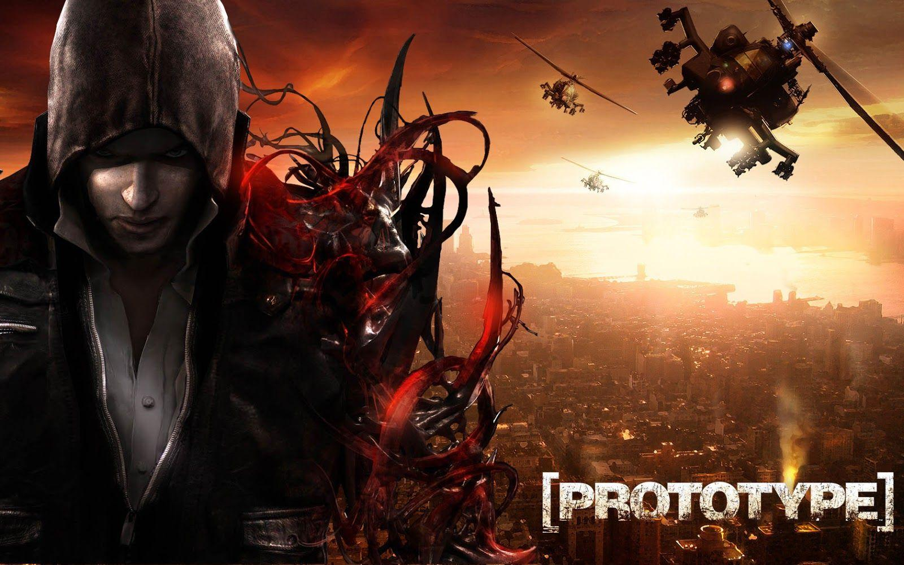
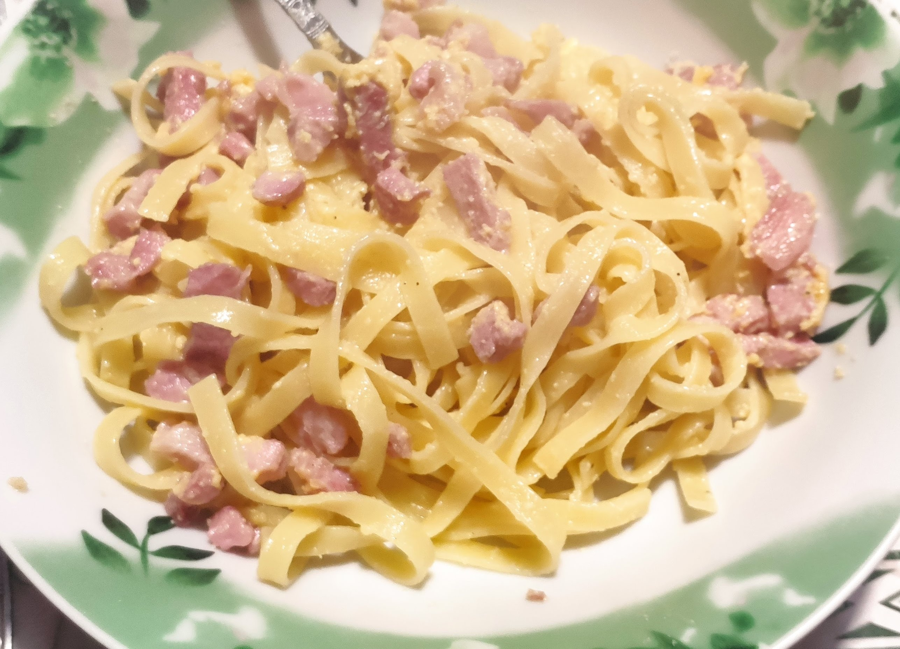
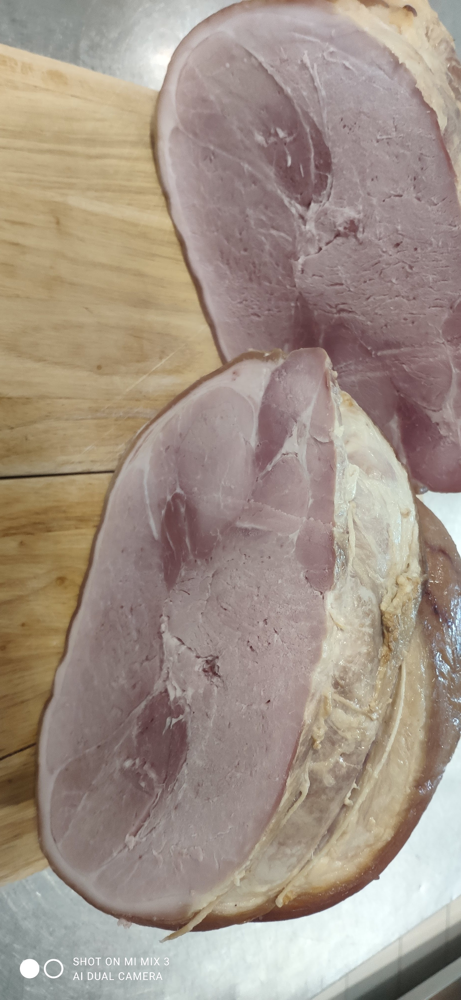
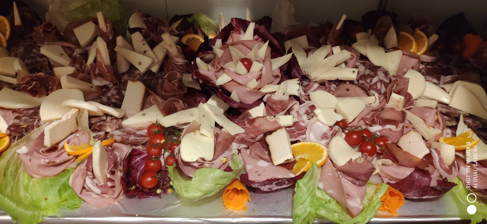
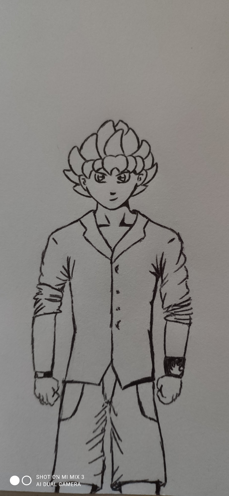
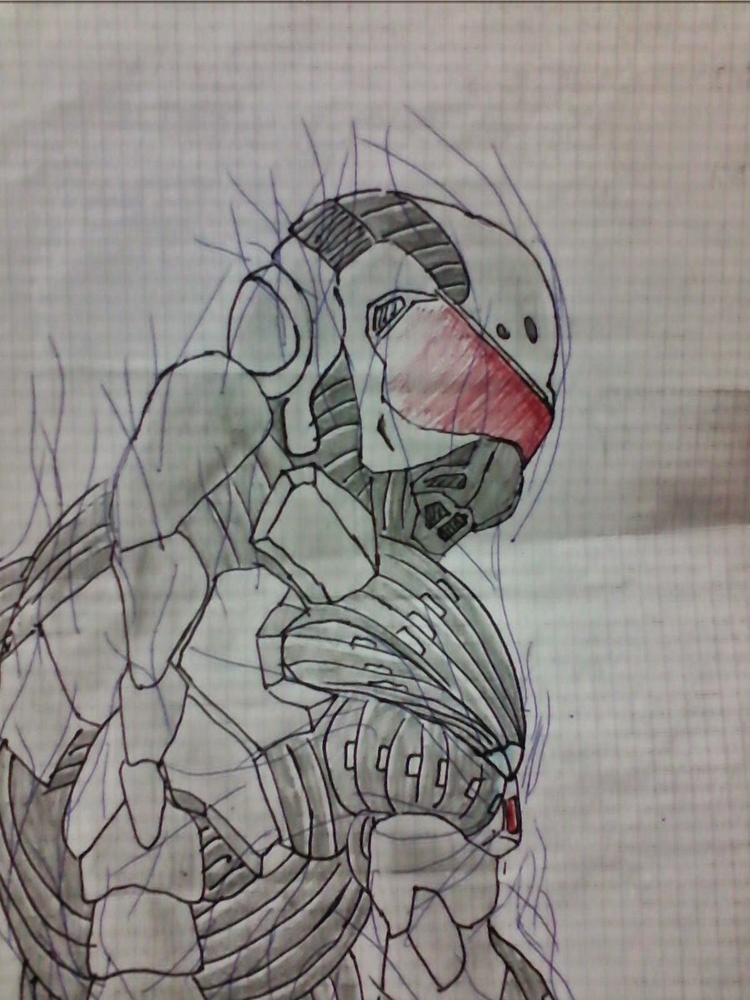
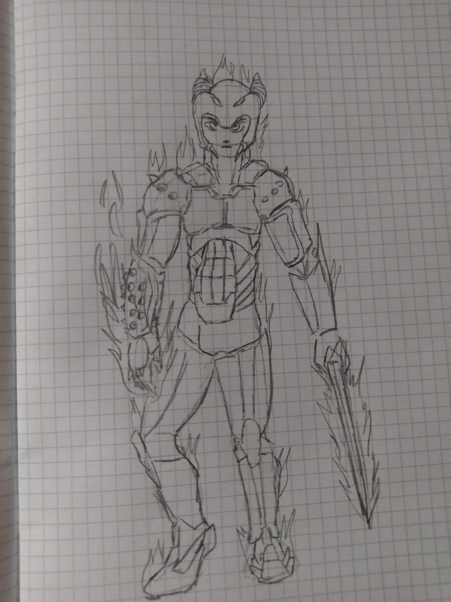

mass-effect
Trilogia rpg ambientato in un lontano futuro dove le tue scelte danno (più o meno) un influenza nei capitoli successivi.

Prototype
Uno dei giochi più distruttivi mai partoriti dalla mente umana dove sei un morto riportato in vita grazie un virus.
Age of mithology
Gioco gestionale dove rivivi i più grandi racconti del mito: da Troia agli anubiti ai giganti del nord e molto altro.

Carbonara
Tipico piatto romano che all'epoca mi cucinai alle 2 di notte circa
dopo che tornai da un servizio di ristorante, ricordo che non avevo particolarmente
fame però avevo già una di quelle voglie che manco una madre in stato interessante
aggiungiamo poi il fatto che lavoravo in un agriturismo e il responsabile dopo quanto detto
prima mi guardo schifato andò via e al ritorno aveva con se un guanciale fatto da noi in mano
e mi disse solo "alla mia salute".
Prosciutto cotto artigianale
Ricordo ancora quanto restai stupito da come nasceva un salume,
dal disossso grezzo del cosciotto del maiale, alla salinatura
artigianale tramite siringa, l'attesa di 3-4 giorni girandolo e
massagiandolo ogni 12-14 ore, la legatura e cucitura della cotenna
e ultimo ma equamente importante: la cottura.
E grande era la soddisfazione poi quando si sfornava, dopo poco si tagliava
e affettava e si gustava.


Tagliere di salumi misto
Il mio primo tagliere di salumi in un banchetto con una grande rosa di radicchio, mortadella e
pepato fresco, più altre piccole fantasie miste (un pò abbozzate come primo tentativo) sparse qua e la.

Kiri
La bozza di un vecchio personaggio di un libro pubblicato da uno scrittore esordiente

Nomad
Un vecchio disegno del protagonista del videogioco "crysis"

Warrior
Uno schizzo di un guerriero fantasy in un momento di attenzione massima a scuola